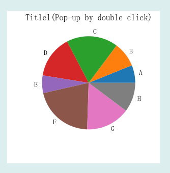

PlotPie二维曲线控件主要用于显示饼图等二维曲线，其图形显示效果如下：

在Python程序GUI界面中创建一个PlotPie二维曲线控件的命令为:
hl=dr.DRPlotPie(win,x,y,w,h,title,labels,data):
其中hl是创建时用户设定的变量名。PlotPie二维曲线控件有1个属性函数。
hl.setValue2D(labels,data)#以覆盖形式绘制饼图
PlotPie二维曲线控件继承至Tkinter的Frame控件和Matplotlib的plotpie函数，必要时可参阅相关资料。
.